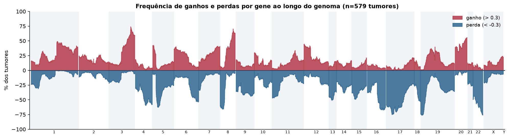
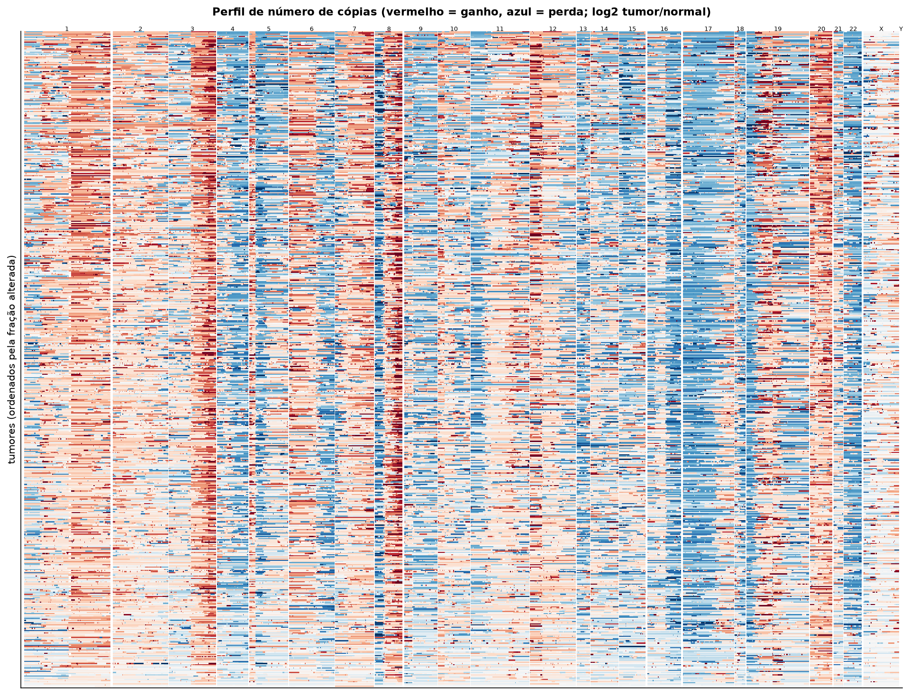
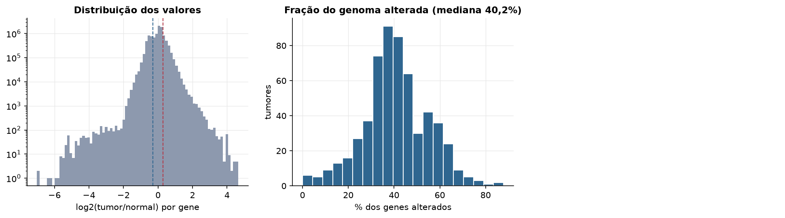
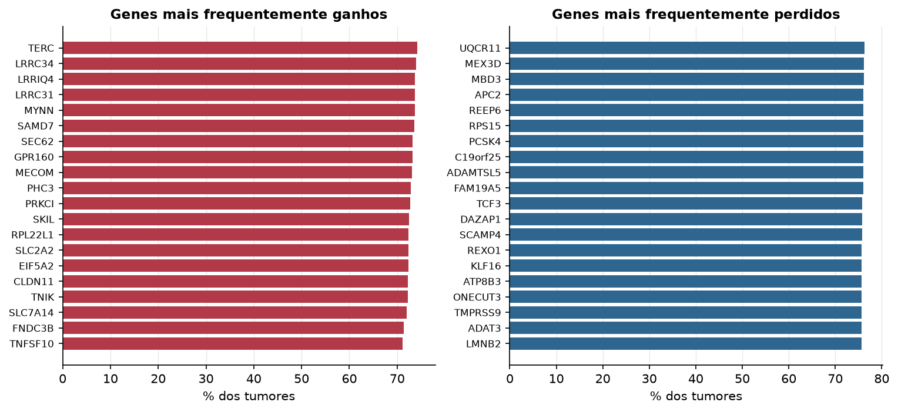

OV · Número de cópias (CNV)
Affymetrix SNP6, segmentos whitelisted do PanCanAtlas · gerado em 22/10/2026 02:22
579tumores
17.738genes
40,2%fração alterada mediana
320segmentos/tumor (mediana)
Fonte: SNP6 whitelisted (PanCanAtlas); nível de gene calculado dos segmentos (hg19)
O valor por gene é o do segmento que cobre o meio do gene (log2 tumor/normal, hg19). Sem correção de pureza e ploidia: tumores com pouca célula tumoral têm valores atenuados. Para chamadas discretas (−2 a 2), use o GISTIC2 do PanCanAtlas ou o ABSOLUTE.
Principais resultados
- Mediana de 40,2% dos genes com ganho ou perda por tumor (limiares log2 de 0.3 e -0.3).
- O cromossomo com mais ganhos em média é o 20 (39,6% dos tumores por gene) e o com mais perdas é o 22 (52,5%).
- Genes mais ganhos: TERC (74%), LRRC34 (74%), LRRIQ4 (74%), LRRC31 (74%), MYNN (74%), SAMD7 (74%). Genes mais perdidos: UQCR11 (76%), MEX3D (76%), MBD3 (76%), APC2 (76%), REEP6 (76%), RPS15 (76%).
Paisagem ao longo do genoma


Carga de alterações

Genes recorrentes

Top 25 genes por frequência de ganho
| gene | chrom | % ganho | % perda | média log2 |
|---|---|---|---|---|
| TERC | 3 | 74.3 | 0.2 | 0.592 |
| LRRC34 | 3 | 73.9 | 0.2 | 0.585 |
| LRRIQ4 | 3 | 73.7 | 0.2 | 0.583 |
| LRRC31 | 3 | 73.7 | 0.2 | 0.581 |
| MYNN | 3 | 73.7 | 0.2 | 0.589 |
| SAMD7 | 3 | 73.6 | 0.2 | 0.578 |
| SEC62 | 3 | 73.2 | 0.2 | 0.576 |
| GPR160 | 3 | 73.2 | 0.2 | 0.575 |
| MECOM | 3 | 73.1 | 0 | 0.582 |
| PHC3 | 3 | 72.9 | 0 | 0.571 |
| PRKCI | 3 | 72.7 | 0 | 0.566 |
| SKIL | 3 | 72.5 | 0 | 0.56 |
| RPL22L1 | 3 | 72.4 | 0 | 0.553 |
| SLC2A2 | 3 | 72.4 | 0 | 0.549 |
| EIF5A2 | 3 | 72.4 | 0 | 0.552 |
| CLDN11 | 3 | 72.2 | 0 | 0.555 |
| TNIK | 3 | 72.2 | 0 | 0.549 |
| SLC7A14 | 3 | 72 | 0 | 0.556 |
| FNDC3B | 3 | 71.3 | 0.2 | 0.542 |
| TNFSF10 | 3 | 71.2 | 0.2 | 0.547 |
| GHSR | 3 | 71.2 | 0.2 | 0.546 |
| NCEH1 | 3 | 71.2 | 0.3 | 0.543 |
| TMEM212 | 3 | 71 | 0.2 | 0.542 |
| PLD1 | 3 | 71 | 0.2 | 0.542 |
| MYC | 8 | 70.6 | 1.9 | 0.637 |
Top 25 genes por frequência de perda
| gene | chrom | % ganho | % perda | média log2 |
|---|---|---|---|---|
| UQCR11 | 19 | 1 | 76.3 | -0.474 |
| MEX3D | 19 | 1 | 76.2 | -0.462 |
| MBD3 | 19 | 1 | 76.2 | -0.462 |
| APC2 | 19 | 1 | 76 | -0.46 |
| REEP6 | 19 | 1.2 | 76 | -0.459 |
| RPS15 | 19 | 1 | 76 | -0.46 |
| PCSK4 | 19 | 1.2 | 76 | -0.459 |
| C19orf25 | 19 | 1.2 | 76 | -0.459 |
| ADAMTSL5 | 19 | 1.2 | 76 | -0.459 |
| FAM19A5 | 22 | 1.6 | 76 | -0.572 |
| TCF3 | 19 | 1 | 75.8 | -0.46 |
| DAZAP1 | 19 | 1 | 75.8 | -0.46 |
| SCAMP4 | 19 | 1 | 75.8 | -0.456 |
| REXO1 | 19 | 0.9 | 75.6 | -0.459 |
| KLF16 | 19 | 0.9 | 75.6 | -0.459 |
| ATP8B3 | 19 | 0.9 | 75.6 | -0.459 |
| ONECUT3 | 19 | 0.9 | 75.6 | -0.459 |
| TMPRSS9 | 19 | 1.2 | 75.6 | -0.45 |
| ADAT3 | 19 | 1.2 | 75.6 | -0.453 |
| LMNB2 | 19 | 1.2 | 75.6 | -0.45 |
| TIMM13 | 19 | 1.2 | 75.6 | -0.45 |
| DOT1L | 19 | 1.2 | 75.5 | -0.448 |
| SPPL2B | 19 | 1 | 75.5 | -0.449 |
| EFNA2 | 19 | 1 | 75.5 | -0.456 |
| MUM1 | 19 | 1 | 75.5 | -0.456 |